Ruta de las Medulas
Ruta por el paisaje unico de Las Medulas, antigua mina de oro romana declarada Patrimonio de la Humanidad por la UNESCO. El recorrido atraviesa bosques de castanos y miradores con vistas a las formaciones rocosas rojizas.
- Tipo: Paisajistica
- Transporte: A pie
- Duracion: 4 horas
- Agencia: Turismo del Bierzo
- Personas: Apta para toda la familia, se recomienda calzado deportivo
- Lugar de inicio: Pueblo de Las Medulas
- Direccion de inicio: Plaza de Las Medulas
- Recomendacion: 9/10
- Fecha de inicio: 2025-06-15
- Hora de inicio: 09:00
Hitos de la ruta
Pueblo de Las Medulas
Punto de inicio de la ruta, pequeno pueblo con centro de interpretacion de Las Medulas.
Distancia desde el hito anterior: 0 m
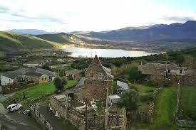
Mirador de Orellán
Espectacular mirador desde el que se contemplan las formaciones rocosas rojizas de Las Medulas y el valle del Bierzo.
Distancia desde el hito anterior: 1200 m
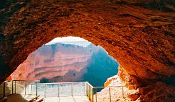
Cueva de Orellán
Cueva artificial excavada por los romanos durante las labores mineras, permite adentrarse en la historia de la explotacion aurifera.
Distancia desde el hito anterior: 800 m
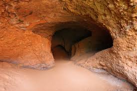
Lago de Somido
Lago artificial creado por los romanos para almacenar agua utilizada en las labores mineras de Las Medulas.
Distancia desde el hito anterior: 1500 m
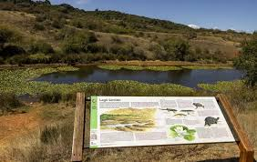
Bosque de Castanos
Bosque de castanos centenarios que rodea Las Medulas, especialmente espectacular en otono con los colores del follaje.
Distancia desde el hito anterior: 900 m
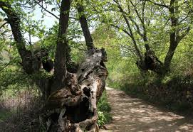
Altimetria de la ruta
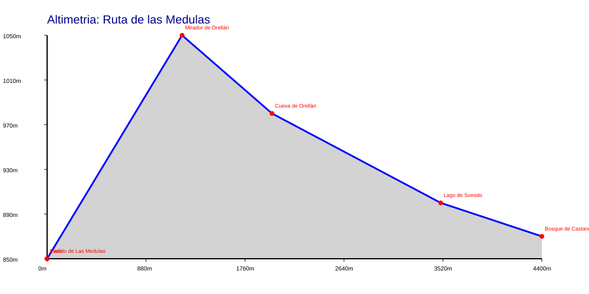
Ruta de la Catedral de Leon
Ruta por el casco historico de Leon con visita a sus principales monumentos, destacando la impresionante Catedral gotica conocida como la Pulchra Leonina por sus espectaculares vidrieras.
- Tipo: Arquitectura y monumentos
- Transporte: A pie
- Duracion: 3 horas
- Agencia: Turismo de Leon
- Personas: Apta para todas las edades, incluida la tercera edad
- Lugar de inicio: Plaza de Regla
- Direccion de inicio: Plaza de Regla s/n
- Recomendacion: 10/10
- Fecha de inicio: 2025-07-10
- Hora de inicio: 10:00
Hitos de la ruta
Catedral de Leon
La Pulchra Leonina, joya del gotico espanol, famosa por sus mas de 1800 metros cuadrados de vidrieras medievales.
Distancia desde el hito anterior: 0 m
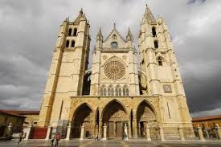
Basilica de San Isidoro
Joya del romanico espanol que alberga el Panteon Real, considerado la Capilla Sixtina del romanico por sus frescos medievales.
Distancia desde el hito anterior: 350 m
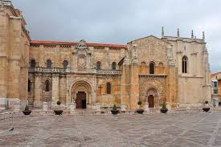
Barrio Humedo
Centro neuralgico de la vida social leonesa, famoso por sus bares de tapas y su ambiente animado tanto de dia como de noche.
Distancia desde el hito anterior: 400 m
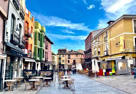
Casa Botines
Edificio modernista disenado por Antoni Gaudi, actualmente museo que alberga obras de arte y exposiciones temporales.
Distancia desde el hito anterior: 300 m
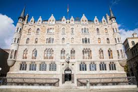
Palacio de los Guzmanes
Magnifico palacio renacentista del siglo XVI, sede de la Diputacion Provincial de Leon, con un hermoso patio interior.
Distancia desde el hito anterior: 150 m
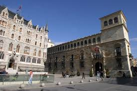
Altimetria de la ruta
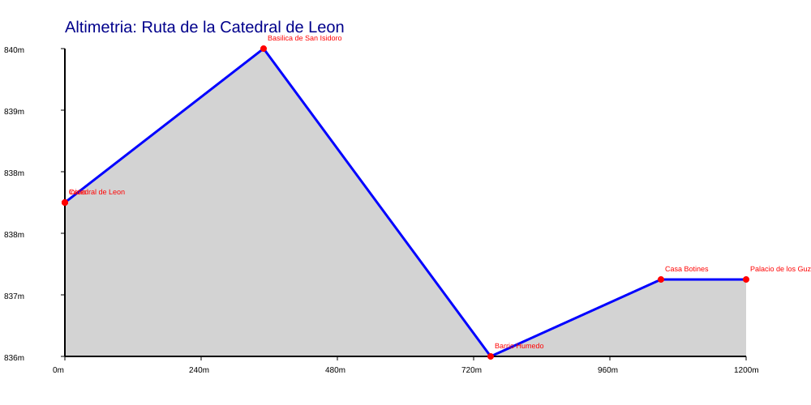
Ruta del Camino de Santiago por Leon
Recorrido por el tramo leonés del Camino de Santiago Frances, pasando por los principales hitos del camino en la ciudad de Leon y sus alrededores, con visita a iglesias, albergues historicos y monumentos jacobeos.
- Tipo: Mixta tapas y monumentos
- Transporte: A pie
- Duracion: 6 horas
- Agencia: Sin agencia
- Personas: Personas en buena forma fisica, se recomienda experiencia previa en senderismo
- Lugar de inicio: Albergue de Peregrinos de Leon
- Direccion de inicio: Calle de la Independencia, 4
- Recomendacion: 8/10
- Fecha de inicio: 2025-08-05
- Hora de inicio: 08:00
Hitos de la ruta
Albergue de Peregrinos de Leon
Punto de inicio de la etapa leonesa del Camino de Santiago, albergue historico que acoge a peregrinos de todo el mundo.
Distancia desde el hito anterior: 0 m
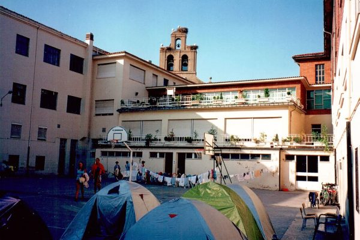
Catedral de Leon
Parada obligatoria del Camino de Santiago en Leon, los peregrinos sellan aqui su credencial en la oficina del Camino.
Distancia desde el hito anterior: 500 m
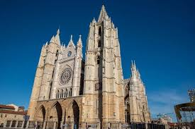
Iglesia de Santa Maria del Camino
Antigua iglesia romanica del siglo XII, punto de referencia tradicional para los peregrinos que atraviesan Leon.
Distancia desde el hito anterior: 600 m
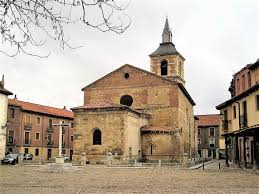
Hospital de Orbigo
Pueblo con el puente medieval mas largo de Espana, escenario del famoso Paso Honroso del caballero Suero de Quinones en 1434.
Distancia desde el hito anterior: 15000 m
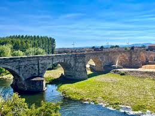
Astorga
Ciudad romana con impresionante catedral gotica y el Palacio Episcopal disenado por Gaudi, importante cruce de caminos jacobeos.
Distancia desde el hito anterior: 16000 m
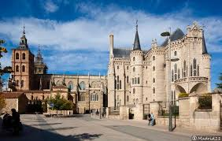
Altimetria de la ruta
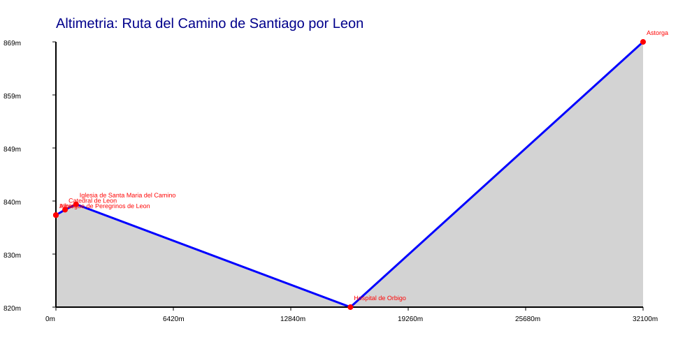